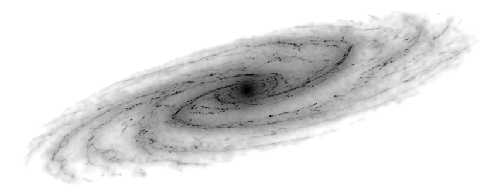

The interstellar medium and star formationWhat controls the large-scale behavior of interstellar medium? |

Relevant papers: Sakre et al. 2020, Benincasa et al. 2020, Dobbs et al. 2019, Benincasa et al. 2019, Pettitt et al. 2018, Nguyen et al. 2018, Price et al. 2018, Espada et al. 2018, Pettitt et al. 2017.
Disc galaxies are full of large amount of interstellar gas. This gas is primarily hydrogen, but contains a significant amount of molecular gases. As this gas contracts due to gravity it cools down, until eventually it becomes dense enough to start forming stars. These stars will then start to give back energy into the surrounding gas. This take take the form of stellar winds and radiation, or even supernova explosions, and is collectively known as stellar "feedback". This energy heats up and carves out cavities in the gas in the neighborhood of the star.
The image to the right is a simple simulation of gas in a galaxy (black coloured material) that is forming stars (coloured points). The feedback from these stars injects energy back into the interstellar gas, creating complex structures.
Adopting these complex physical processes into simulations is a nuanced process. In large scales of galactic simulations we cannot truly resolve how star formation and feedback impact the interstellar medium, so we need to take care within our models to incorporate this energy correctly. Below is a fly-by of a simple movie where a featureless disc of gas is allowed to form stars, which then inject energy back into the gas, creating these characteristic cavities.
Once we are confident that these processes work, we can start to look at interesting properties of our simulated galaxies. Below is an image of stars and gas in a simulation of a multi-armed spiral galaxy simulation. Stars are shown on the left, and gas on the right, with top panels showing an edge-on view. The stars are coloured by their ages, with yellow regions being much older than the blue regions, which are born in the dense gas in the spiral arms.

As gas in a galaxy contracts, it is believed it takes the form of small pockets or clumps of very dense material that will one day go on to be the sites of fresh star formation in a galaxy. Scientists dub these giant molecular clouds, due to their large concentrations of dense molecular material (e.g. CO, H2). Understanding what shapes these clouds and how they evolve is of great importance as it will determine how star formation will progress in a galaxy.

Above is a picture showing the evolution of two clouds within a galaxy simulation. The clouds are coloured orange and blue, with black stars indicating their centre of mass. They fly into each other in the spiral arm, altering their structure as they do so. Eventually they dissipate as they leave the high gas concentrations in the spiral arms, some 20 million years after they collide.
One of the most important puzzles in galactic physics is understanding what processes control the star formation in a galaxy. Many observational studies suggest a combination of factors, such as the amount of dense molecular gas, but also that the star formation process may vary considerably between locations.
Numerical simulations offer an excellent tool in studying which processes may be the most important in controlling a galaxy's star forming potential. The maps below show data from a galaxy simulation with a strong 2-armed spiral (solid lines). This spiral not only induces the creation of pockets of dense gas (left) but also controls the velocity flows (middle, blue gas moves together and red moves apart), which together influence where stars are formed (right, blue stars are youngest, red oldest).